A sequence diagram describes an Interaction by focusing on the sequence of Messages that are exchanged, along with their corresponding OccurrenceSpecifications on the Lifelines.
- Object Management Group
Un diagramme de séquence est un diagramme qui représente la séquence de messages entre les objets au cours d'une interaction.
- Wikipedia
| Nom | Représentation | Description |
|---|---|---|
| Frame | 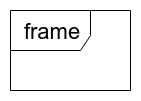 | Elément permettant d'identifier un diagramme par son label. |
| Lifeline | 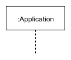 |
Représente un participant au diagramme de séquence sous forme de timeline. Des éléments Execution Specification ou Activation Bar représentés par un rectangle blanc permettent d'identifier les actions. |
| 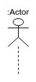 |
Représente un acteur. |
Entity-Control-Boundary (ECB) est un pattern d'architecture permettant de structurer les classes en fonction de leur responsabilité.
| Nom | Représentation | Description |
|---|---|---|
| Lifeline | 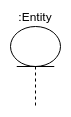 |
Représente un objet lié à des données systèmes (Client, Produit...). |
| 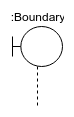 |
Représente une interface ou un système / service externe (Base de données, Serveur proxy...). |
|
| 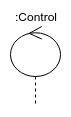 |
Organise et planifie les intéractions. Généralement situé entre Entity et Boundary. |
Les messages permettent de définir les intéractions entre les différents participants.
| Nom | Représentation | Description |
|---|---|---|
| Call | 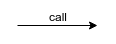 | Représente une communication entre deux participants. |
| Async | 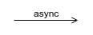 | Représente une communication asynchrone entre deux participants. Ne bloque pas la lifeline de l'emetteur. |
| Return | 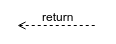 | Représente un retour communication entre deux participants. |
| Found | 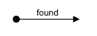 | Représente une communication entrante dont l'on connais le destinataire mais pas l'emetteur. |
| Lost | 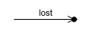 | Représente une communication sortante dont l'on ne connais pas le destinataire mais uniquement l'emetteur. |
Les messages permettent de définir les intéractions entre les différents participants.
| Nom | Représentation | Description |
|---|---|---|
| Self call | 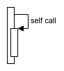 | Représente une communication d'une lifeline vers elle-même. |
| Destruction | Représente la destruction (volontaire) d'une communication. | |
| Fragment | 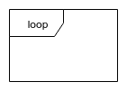 | Permet d'isoler une partie du diagramme et de lui associer un comportement (boucle, condition, optionel, parallèle...). |
Réalisez un diagramme de séquence pour représenter un formulaire de login.
Réalisez un diagramme de séquence pour représenter l'achat en ligne d'un ticket de cinéma.
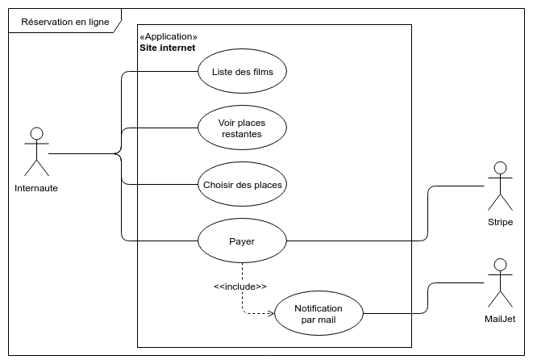